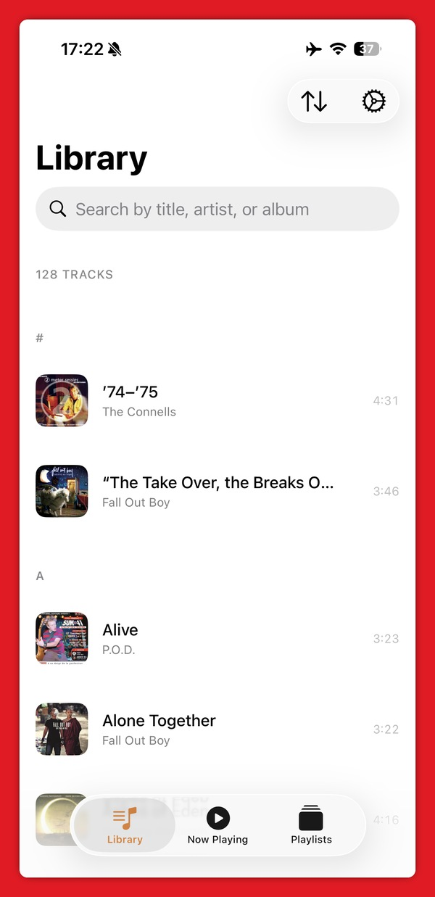
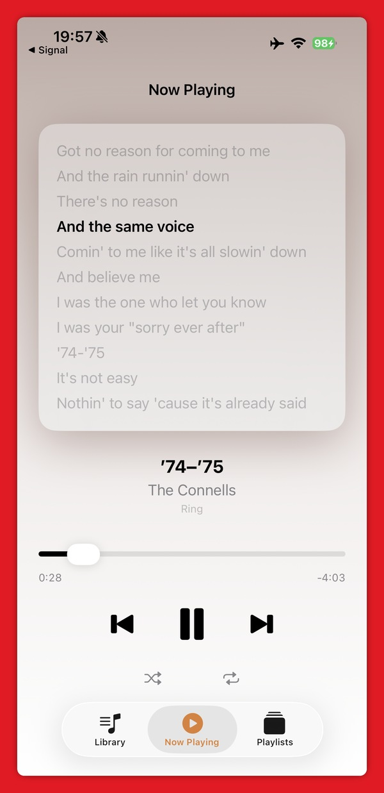
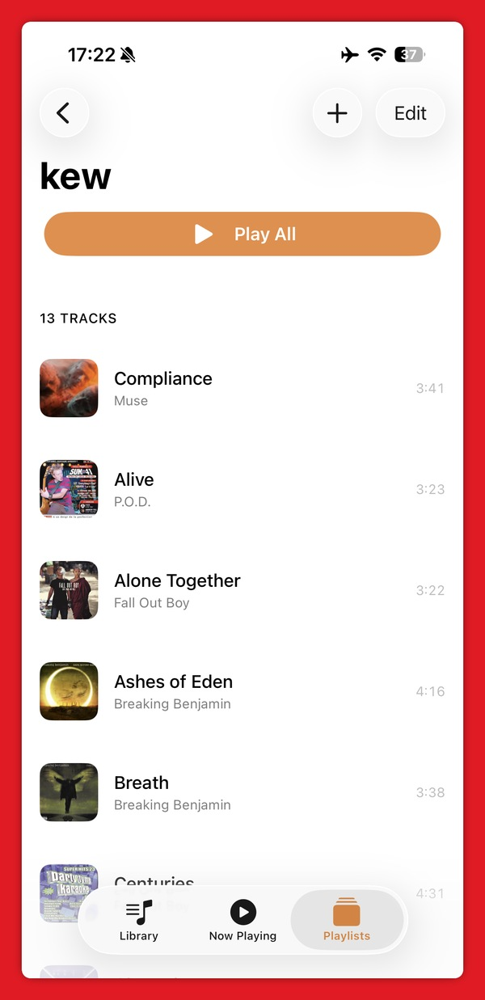
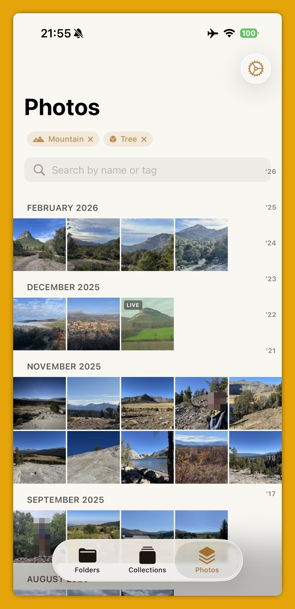
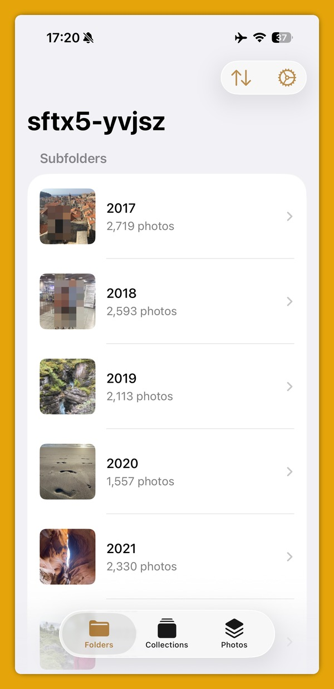
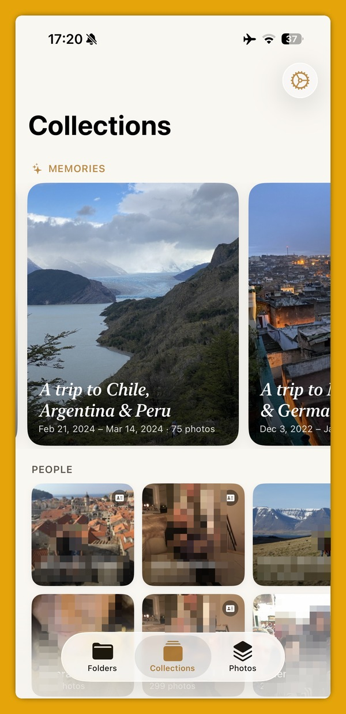
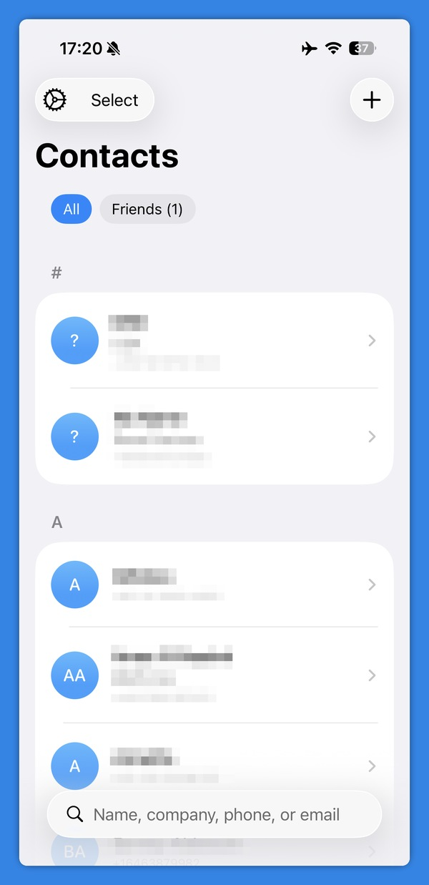
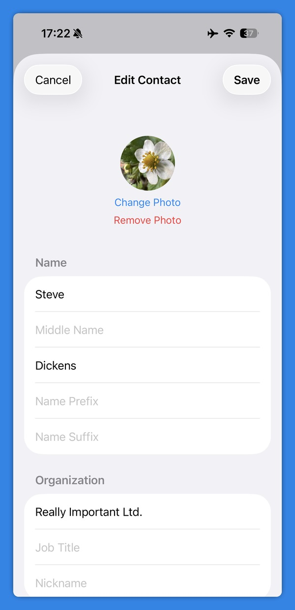
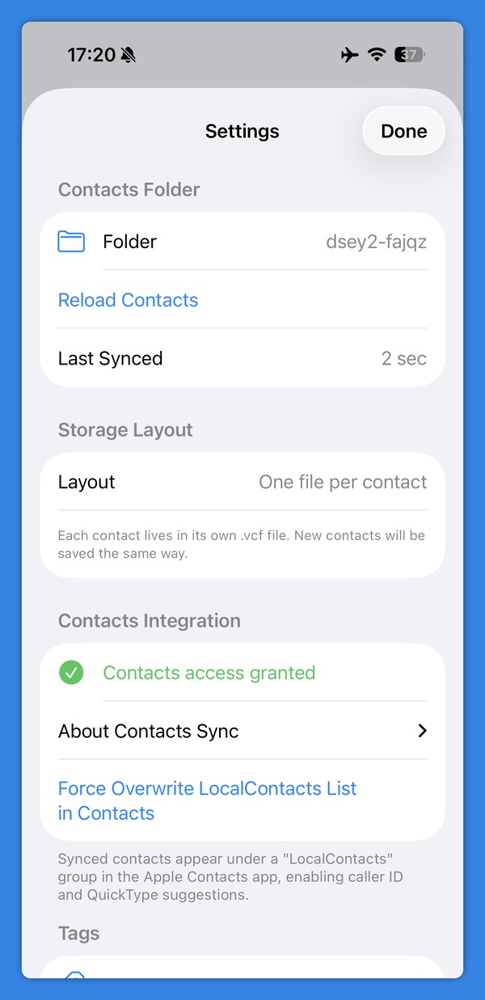

why
I try not to use the cloud for my personal files. Not because I can't, but because I already have a setup on Linux that works: photos managed in digikam, contacts in khard, music in a folder on a hard drive. I know exactly where those files are. I can inspect them, back them up, and open them with any tool I choose ten years from now.
Cloud services are convenient until they change their pricing, shut down, or decide you've violated a policy. .vcf files, .mp3 files, .jpeg and .png files with up-to-date metadata - these will still be readable long after any particular app stops existing. The apps on this site are the iOS end of that setup. No accounts, no syncing to someone else's server, no lock-in.
apps
LocalMusic
A music player for files you own. Point it at a folder synced via Synctrain and it scans, indexes, and plays your library. No streaming, no recommendations, no accounts — just your music.
- Search and filter your music files
- Playlist support via
.m3ufiles with relative paths - Full playback controls, background audio iOS integration
- Lyrics display
- Mini-player while browsing
Desktop companion: kew — a terminal music player for Linux



LocalGallery
A photo browser for your local library. Your photos stay on disk; LocalGallery reads the EXIF metadata written by photo-tools and the same metadata digikam manages on the desktop. Browse by folder, tag or person - all derived from the metadata in the files themselves.
photo-tools runs on Linux and tags new photos automatically: RAM++ for object recognition, CLIP embeddings for landmark identification, and Paddle OCR for text in images. Tags are written as EXIF metadata inside the photo file, so they survive any move or rename and are readable by any XMP-aware tool.
- Photo grid and full-screen viewer
- EXIF and XMP metadata display
- Memories and collections view
- Person tagging linked to contacts, to surface memories on birthdays
Desktop companion: digikam — photo management for Linux



LocalContacts
A contacts manager for vCard files you own. Your contacts live as plain .vcf files in a folder synced via Synctrain. LocalContacts reads them, lets you browse and edit, and keeps them in sync with Apple's native Contacts app — so your contacts work everywhere on iOS (Phone, Messages, Mail) while remaining portable plain-text files.
- Browse, search, and edit contacts
- Bidirectional sync with Apple Contacts
Desktop companion: khard — a terminal vCard contacts manager



the stack
All three apps share the same sync layer: Syncthing on Linux and Synctrain on iOS. Syncthing is a decentralized, open-source P2P sync tool - no relay server required on a local network, no account, no data leaving your machines. Synctrain is the excellent iOS client that makes it seamless on iPhone.
| tool | role | platform |
|---|---|---|
| Syncthing | file sync daemon | Linux |
| Synctrain | file sync | iOS |
| photo-tools | automatic photo tagging (RAM++, CLIP, OCR) | Linux |
| digikam | photo management | Linux |
| khard | vCard contacts manager | Linux |
| kew | music player | Linux |
privacy
These apps collect no data. They make no network requests. There are no analytics, no crash reporters, no third-party SDKs of any kind.
All three apps read and write files in folders you choose on your device. File sync is handled by Synctrain at the OS level - the apps themselves are entirely unaware of the network.
data collected
None.
network access
None. The apps do not initiate any network connections.
third-party SDKs
None. These apps have no external dependencies beyond Apple's own frameworks.
data storage
All data lives in files in the folder you designate. App preferences are stored in the iOS standard UserDefaults. Deleting the app removes preferences; your files remain in the folder you chose.
contact
Questions or comments? mail@j23n.com